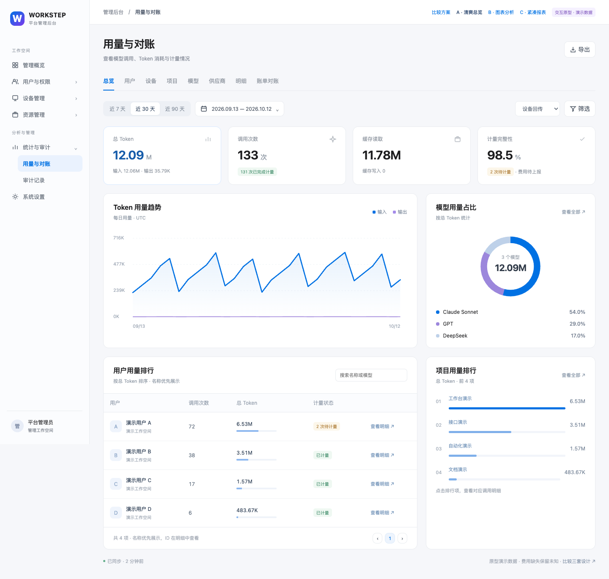
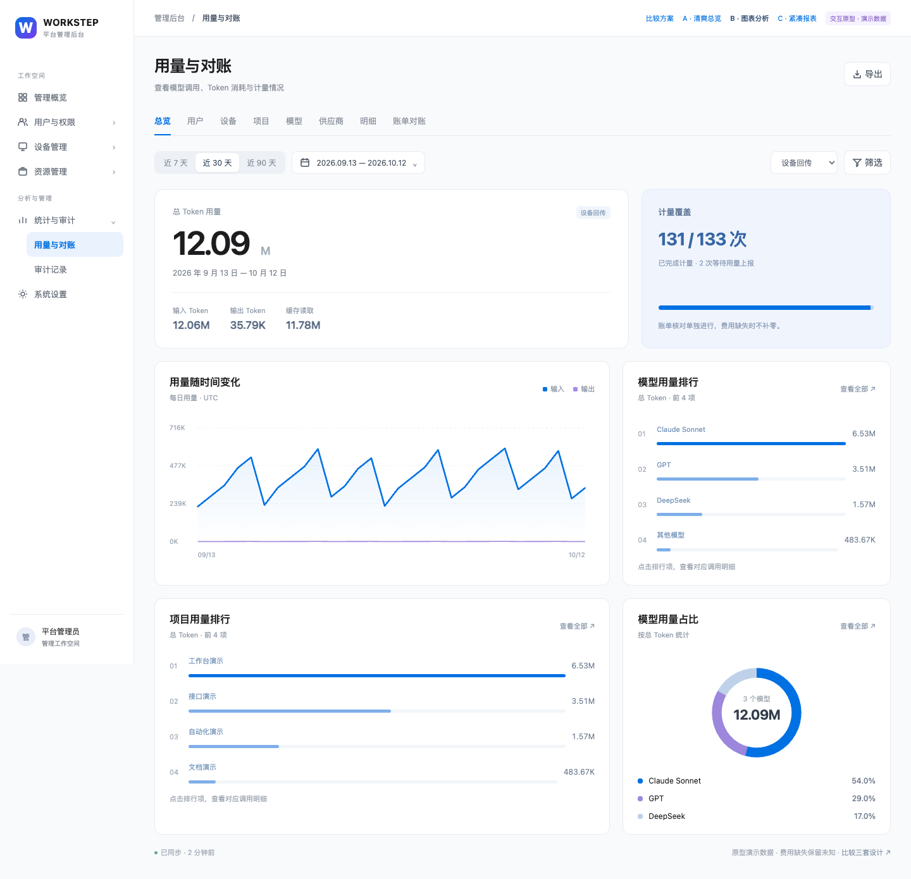
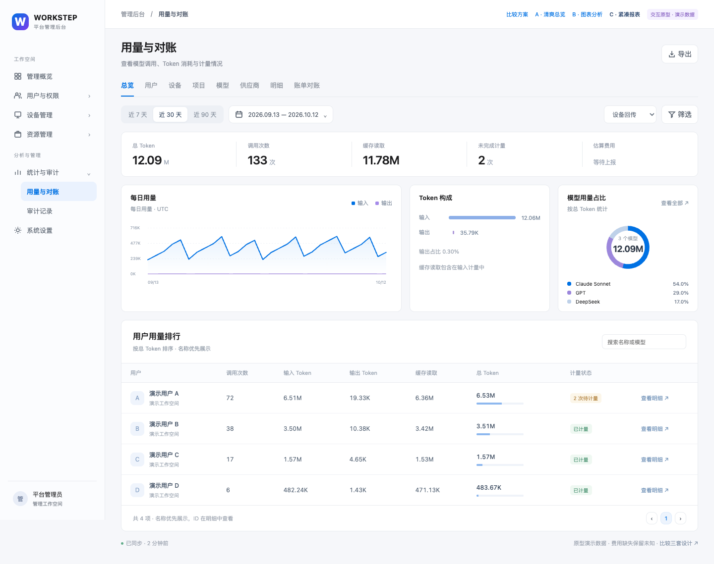

W
HTML 交互原型WORKSTEP用量与统计 · 设计方向
统计页面，换一种看法。
收起冗长筛选，用图表建立层次。
三套原型均可切换统计维度、日期范围、筛选条件和调用明细。

方案 A推荐
清爽总览
四项关键指标，趋势与模型占比并排，下方接用户、项目排行。适合日常查看。
打开交互原型↗

方案 B
图表分析
突出总量和趋势，模型与项目用横向排行展示。适合观察消耗变化。
打开交互原型↗

方案 C
紧凑报表
扁平指标栏、小图与完整数据表格。适合频繁查询、核对和导出。
打开交互原型↗
全部使用演示数据。用户、设备和项目优先显示名称；ID 留在明细。原型尚未应用到正式页面。
图表、日期弹层、筛选弹层与导出交互在三套方案中共用。